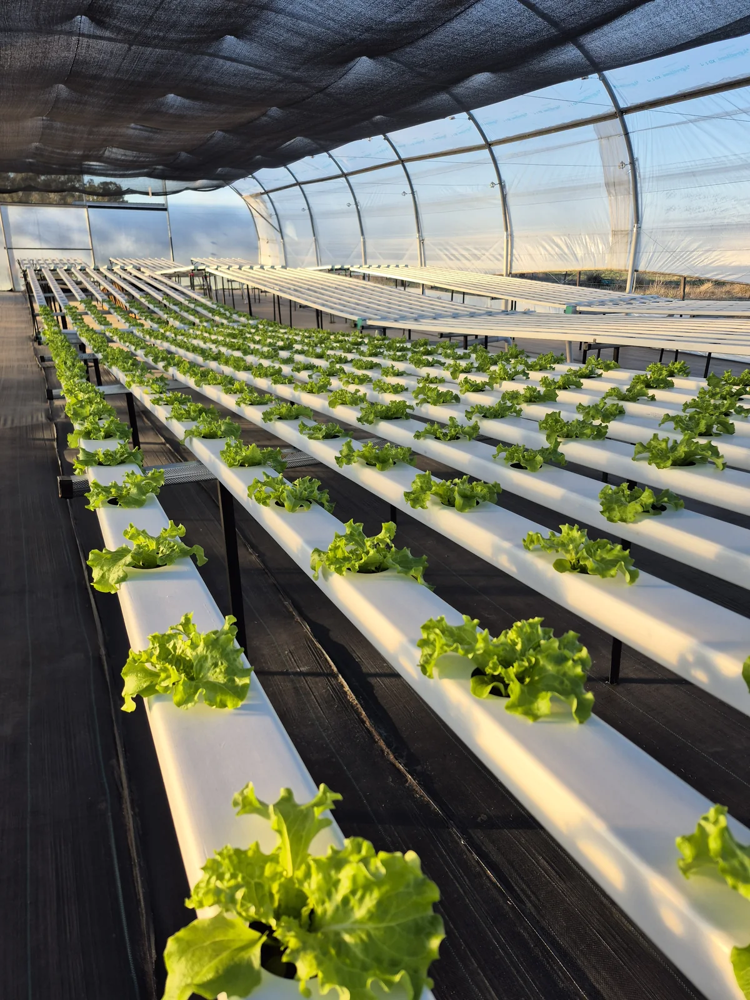
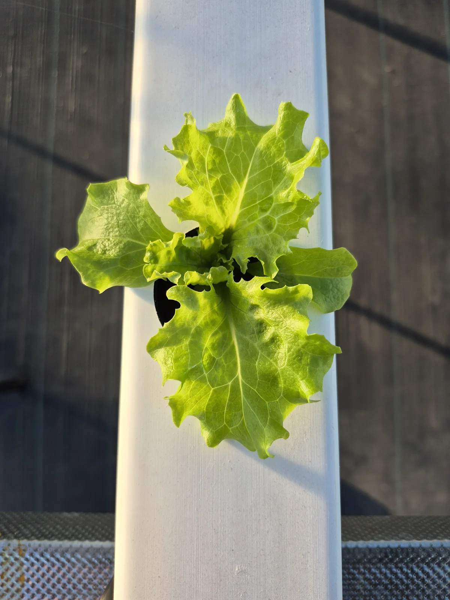
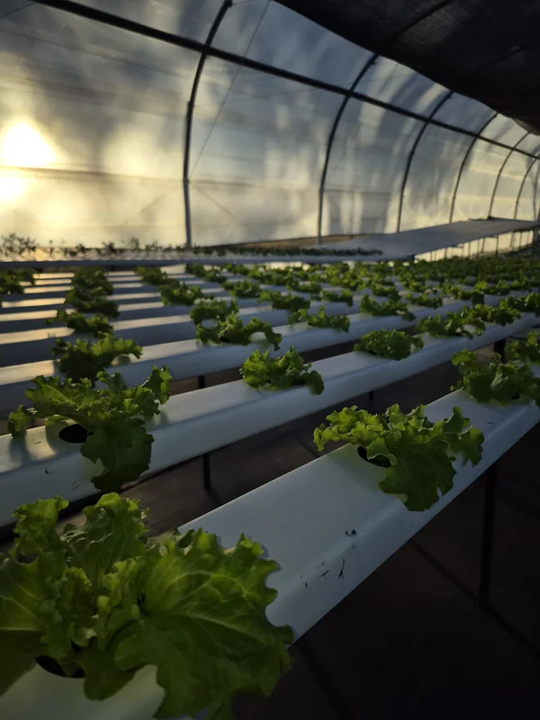
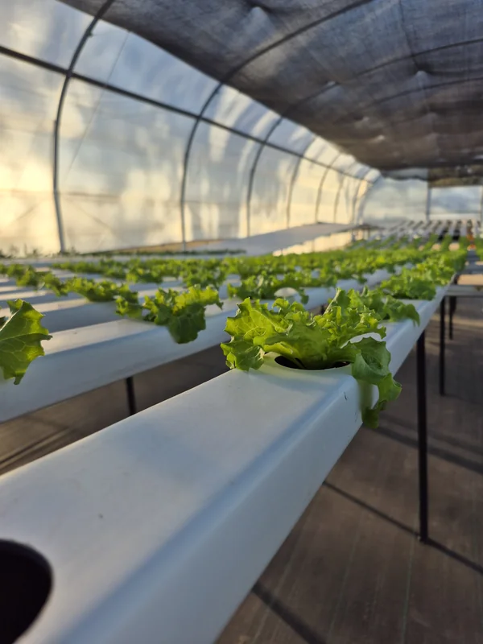
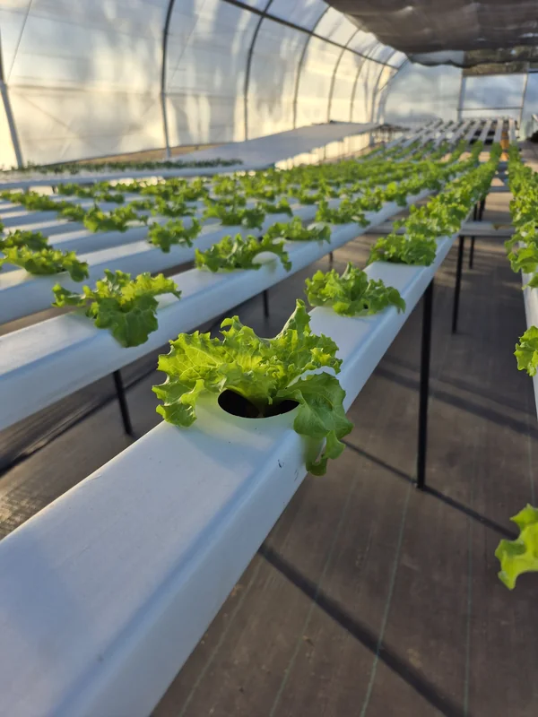
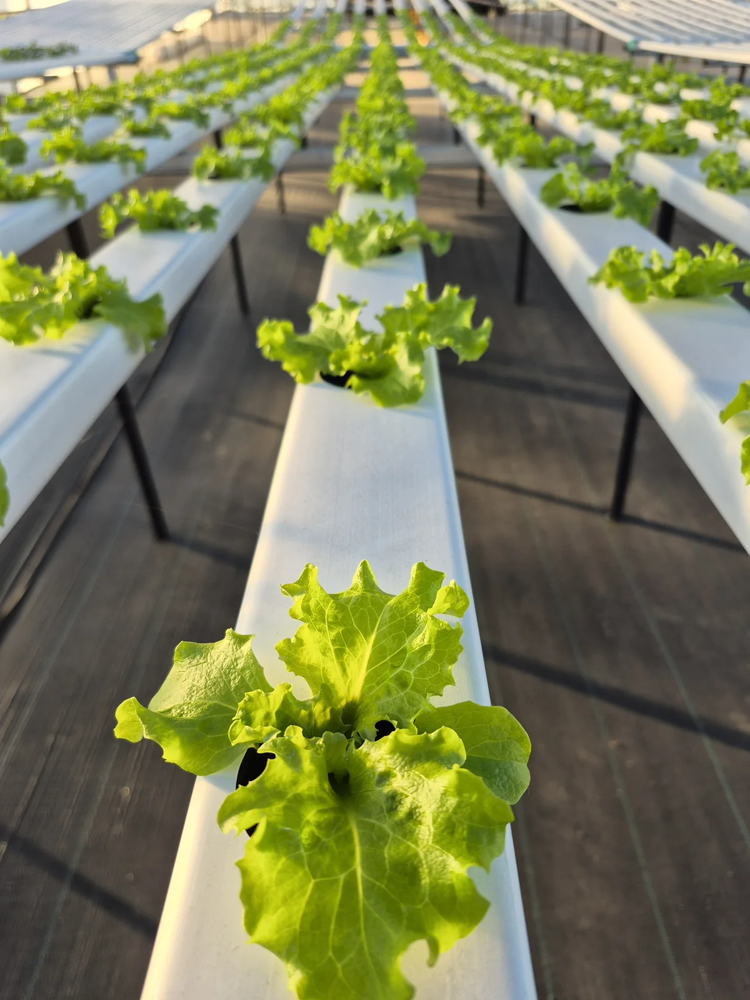
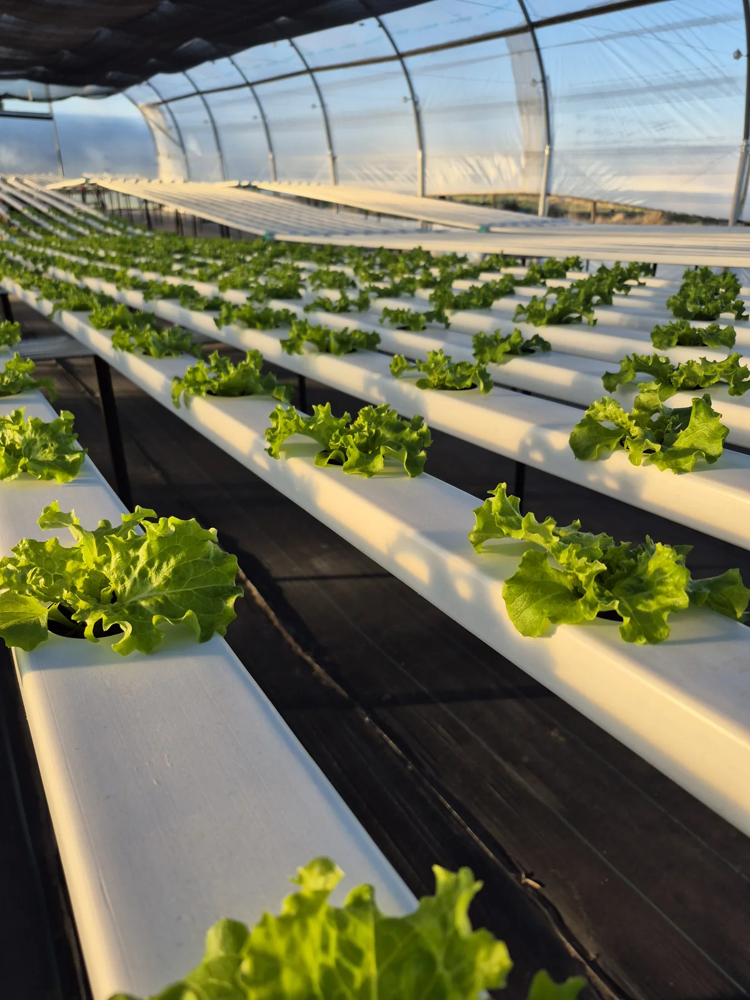
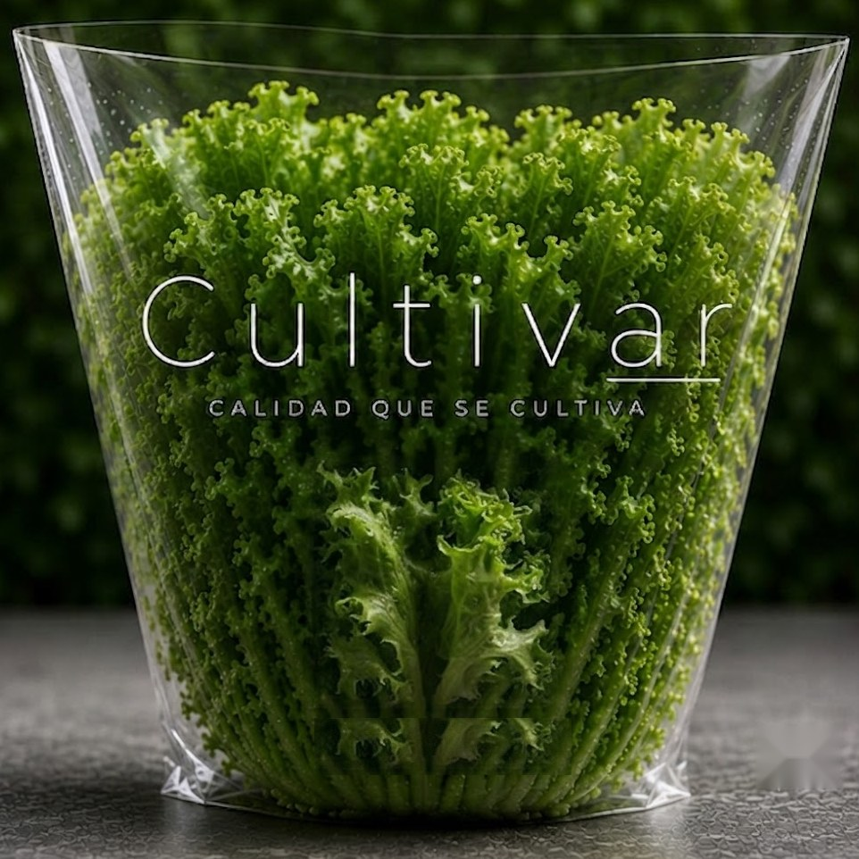

01 El origen
Una raíz.
Una historia viva.
Antes de llegar a tu mesa, la frescura empieza a crecer. Recorré la vida de una lechuga, desde la raíz.
Deslizá para avanzarUna etapa por gesto.01 El origen
Antes de llegar a tu mesa, la frescura empieza a crecer. Recorré la vida de una lechuga, desde la raíz.
Deslizá para avanzarUna etapa por gesto.02 El agua
Las raíces reciben agua y nutrientes. Así cultivamos: sin suelo, con atención en lo que cada planta necesita.
03 El cultivo
La planta se abre, gana volumen y encuentra su forma. En nuestro invernadero acompañamos ese crecimiento, cada día.
04 La cosecha
Cosechamos la lechuga entera, con su raíz intacta. La frescura que ves es la que queremos acercarte.
Conocé nuestro cultivo01 / El lugar donde sucede
Puertas adentro de nuestro invernadero en Tomás Manuel de Anchorena, La Pampa. Fotos reales de las plantas, los canales y la luz que acompaña cada día.







Las raíces reciben agua y nutrientes, sin suelo.
Cosechamos la planta entera para conservar su frescura.
Producimos en Anchorena. Hablás directamente con Cultivar.

02 / De la raíz a tu mesa
Una lechuga que se cosecha con su raíz y un envase transparente que deja ver lo que llevás a tu mesa.
La planta se cosecha entera, con su raíz intacta, para conservar su frescura hasta llegar a tu mesa.
Conservala en la heladera y mantené las raíces hasta el momento de consumirla. Lavala antes de comer, como indica nuestro envase.
Sí, podés consultar para tu verdulería o restaurante. Contanos qué cantidad necesitás y en qué localidad estás para coordinar disponibilidad y entrega.
Escribinos por WhatsApp. Te confirmamos disponibilidad y coordinamos los detalles con vos.
03 / Pedidos y consultas
Para tu casa, tu verdulería o tu restaurante. Contanos qué necesitás y dónde estás; coordinamos directamente con vos.
Nuestro lugar
Acceso a Tomás Manuel de Anchorena y Heberto Espel
Tomás Manuel de Anchorena, La Pampa
Para coordinar un pedido o un retiro, escribinos antes por WhatsApp. Si el mapa no carga, podés abrir «Cómo llegar».
Calidad que se cultiva
El QR del envase te invita a conocer cómo cultivamos.
Si ya estás acá, esa historia ya empezó.
{kind=link}
{kind=link}
{kind=link}
{kind=link}
{kind=link}
{kind=link}
{kind=link}